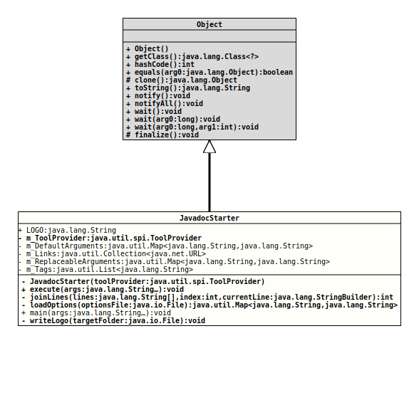

Package org.tquadrat.foundation.javadoc
Class JavadocStarter
java.lang.Object
org.tquadrat.foundation.javadoc.JavadocStarter
@ProgramClass
@ClassVersion(sourceVersion="$Id: JavadocStarter.java 823 2021-01-02 22:12:21Z tquadrat $")
@API(status=STABLE,
since="0.1.0")
public final class JavadocStarter
extends Object
Executes the
The program takes the name of a file as the only command line argument; that file contains the Javadoc options and parameters, as described in
The following default settings are made by the program:
The format must have the following format:
JavaDoc tool with a bunch of default
parameters.The program takes the name of a file as the only command line argument; that file contains the Javadoc options and parameters, as described in
https://docs.oracle.com/en/java/javase/15/docs/specs/man/javadoc.html
and
https://docs.oracle.com/en/java/javase/15/docs/specs/javadoc/doc-comment-spec.html.The following default settings are made by the program:
-author
-bottom Copyright © 2002-2021 by Thomas Thrien (tquadrat.org)
-breakiterator
-charset UTF-8
-docencoding UTF-8
-docfilessubdirs
--enable-preview
-encoding UTF-8
--expand-requires all
-footer ""
-header ""
-html5
-javafx
-keywords
-link https://docs.oracle.com/en/java/javase/15/docs/api/
-link https://apiguardian-team.github.io/apiguardian/docs/current/api/
-linksource
-locale en_GB
-notimestamp
-private
-quiet
-serialwarn
--show-members private
--show-module-contents all
--show-packages all
--show-types private
-source 15
-sourcetab 4
-splitindex
-tag note
-tag param
-tag return
-tag throws
-tag author
-tag extauthor
-tag thanks
-tag modified
-tag version
-tag since
-tag see
-tag inspired
-tag UMLGraph.link
-tag todo
-taglet org.tquadrat.foundation.javadoc.AuthorTaglet
-taglet org.tquadrat.foundation.javadoc.AnchorTaglet
-taglet org.tquadrat.foundation.javadoc.HRefTaglet
-taglet org.tquadrat.foundation.javadoc.IgnoreTaglet
-taglet org.tquadrat.foundation.javadoc.IncludeTaglet
-taglet org.tquadrat.foundation.javadoc.InspiredTaglet
-taglet org.tquadrat.foundation.javadoc.ModifiedTaglet
-taglet org.tquadrat.foundation.javadoc.NoteTaglet
-taglet org.tquadrat.foundation.javadoc.ThanksTaglet
-taglet org.tquadrat.foundation.javadoc.ToDoTaglet
-taglet org.tquadrat.foundation.javadoc.UmlGraphLinkTaglet
-taglet org.tquadrat.foundation.javadoc.UnderlineTaglet
-top <div style='overflow:auto;'><img src='{@docRoot}/resources/tquadrat_logo.jpg' alt='tquadrat.org' style='float:right;''><p style='font-family:sans-serif;font-size:40px;font-weight:bold;padding-left:30px;'>tquadrat Foundation Library%lt;/p'></div>'
-use
-version
The format must have the following format:
- Lines beginning with the '#' symbol are comments and will be ignored; same for empty lines.
- A line with an option starts with a '-' hyphen; the arguments for the option are separated with a blank from the option itself.
- Usually, the end of the line terminates an option, but a backslash as the last character of the line allows to extend the option into the next line.
- Each non-empty line that does not contain an option or a comment is either a package or a source file.
- Author:
- Thomas Thrien (thomas.thrien@tquadrat.org)
- Version:
- $Id: JavadocStarter.java 823 2021-01-02 22:12:21Z tquadrat $
- Since:
- 0.1.0
- UML Diagram
-

UML Diagram for "org.tquadrat.foundation.javadoc.JavadocStarter"
{kind=link}
-
Field Summary
FieldsModifier and TypeFieldDescriptionstatic final StringThe name of the logo file: "tquadrat_logo.jpg".The default arguments.
The map is immutable.private static final Collection<URL>The list of the Link URLs.The arguments that can be replaced by those on the command line.
The key is the argument name, the value is the arguments value; it will never be empty.
The map as such is immutable.The tags and taglets.private final ToolProviderThe tool provider. -
Constructor Summary
ConstructorsModifierConstructorDescriptionprivateJavadocStarter(ToolProvider toolProvider) Creates a newJavadocStarterinstance. -
Method Summary
Modifier and TypeMethodDescriptionfinal voidDoes the program's work.private final intjoinLines(String[] lines, int index, StringBuilder currentLine) Joins lines in the options file that ends with a backslash with the next line and return the new index.loadOptions(File optionsFile) Reads the options file and returns the options from it.
The source files and package names will get the key "ARGUMENT<#>" where # is a counter.static voidThe program entry point.private final voidWrites the logo to the given folder.
-
Field Details
-
LOGO
The name of the logo file: "tquadrat_logo.jpg".- See Also:
-
m_ToolProvider
The tool provider. -
m_DefaultArguments
The default arguments.
The map is immutable. -
m_Links
The list of the Link URLs. -
m_ReplaceableArguments
The arguments that can be replaced by those on the command line.
The key is the argument name, the value is the arguments value; it will never be empty.
The map as such is immutable. -
m_Tags
The tags and taglets.
-
-
Constructor Details
-
JavadocStarter
Creates a newJavadocStarterinstance.- Parameters:
toolProvider- The tool provider for the Javadoc tool.
-
-
Method Details
-
execute
Does the program's work.- Parameters:
args- The command line arguments.- Throws:
IOException- A problem occurred when determine the project location.
-
joinLines
Joins lines in the options file that ends with a backslash with the next line and return the new index.- Parameters:
lines- The lines from the options file.index- The current index.currentLine- The contents for the current line.- Returns:
- The new index.
-
loadOptions
Reads the options file and returns the options from it.
The source files and package names will get the key "ARGUMENT<#>" where # is a counter.- Parameters:
optionsFile- The options file.- Returns:
- The options from the file, or from
m_ReplaceableArguments. - Throws:
IOException- A problem occurred when reading the options file.
-
main
The program entry point.- Parameters:
args- The command line arguments.
-
writeLogo
Writes the logo to the given folder.- Parameters:
targetFolder- The destination folder.- Throws:
IOException- Cannot write the logo file.
-